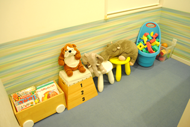

「しらやま歯科」院長より皆様へ
はじめまして。「しらやま歯科院長」で院長を務める白山です。私は、自然が多くゆったりとした土地柄、そして何より住んでいる人が大好きなこの三田の地にて、2009年に歯科医院を開院しました。
当院では安心して治療を受けていただけるよう、患者様の気持ちをくみ取り、なるべく痛くない治療を心がけています。モットーとして掲げている治療方針は「丁寧と親切」。専門用語はなるべく使わず、わかりやすい説明をしながら、皆様とのコミュニケーションを大事にした治療をしていきたいと思います。
いつまでも健康な歯を保つためには、子どもの頃から「歯を予防すること」が大切です。そのため、特にお子様には怖くない対応と痛くない治療を心がけています。まだまだ新参者ですが、どうぞよろしくお願いいたします。お口のことでお困りのことがあれば、どうぞお気軽にご来院ください。私たちとともに、改善していきましょう。
院長紹介
白山英樹（しらやま ひでき）
| 2002年 | 朝日大学歯学部 卒業 |
|---|---|
| 2002年 | 兵庫県立淡路病院口腔外科 勤務 |
| 2003年 | 三田市 たなか歯科医院 勤務 |
| 2009年10月 | しらやま歯科医院 開業 |
受講コース
- JIADSペリオコース
- ホワイトニングセミナー受講
- ダイレクトボンディング受講
- 筒井塾咬合療法コース受講
- FDP臨床研究学会会員
求人情報
| 募集職種 | 歯科助手、歯科衛生士 |
|---|---|
| 雇用形態 | パート・アルバイト |
| 勤務地 | 兵庫県三田市けやき台3-12-1 |
| 交通 | JR「新三田駅」からバスで中央公園北口からすぐ |
| 給与 | ≪歯科助手≫ ≪歯科衛生士≫ |
| 交通費 | 支給（上限あり） |
| 社会保険 | 雇用、労災 |
| 待遇・福利厚生・ その他手当 |
超過勤務の場合は別途残業代支給、スタッフルームあり、制服・シューズ貸与、車・バイク・自転車通勤可（駐車場完備）、親睦会あり |
| 昇給 | 実績による |
| 備考欄 | パート・アルバイトの加入保険は労働時間による パート・アルバイトの勤務日・時間はご相談に応じます |
問合せ方法｜医院にお問い合わせ下さい
079-564-4618
医院概要
| 医院名 | しらやま歯科 |
|---|---|
| 住所 | 兵庫県三田市けやき台3-12-1 |
| 電話番号 | 079-564-4618 |
| 駐車場 | 7台完備 |
| アクセス方法 | JR「新三田駅」からバスで中央公園北口からすぐ |
| 月 | 火 | 水 | 木 | 金 | 土 | 日 | |
|---|---|---|---|---|---|---|---|
| 9：00～13：00 | |||||||
| 15：00～19：30 |
▲土曜日の午後は14：00～17：00の診療となります
駐車場
医院案内
- 待合室
- 明るく日が差し込む、静かで落ち着いた雰囲気の待合室です。
- キッズスペース
- 
- 小さなお子様でも楽しく遊びながら待つことができるキッズスペースを完備しています。
- ブラッシングルーム
- 治療前の歯みがきや診療後の化粧直しなどにご利用いただける洗面所です。
- 殺菌スリッパ
- 常に殺菌した清潔なスリッパを使っていただくための専用機器です。
- バリアフリー
- ご年配の方や身体の不自由な方でも安心のバリアフリー設計です。
- 診療室
- 広々としたスペースでリラックスして診療が受けられる診療室です。
- 治療台
- 治療用機器のほか、患者様自身が治療の様子を確認できるモニターも設置しています。
- オゾン水
- 院内感染を防ぎ、より安全な治療を実現するためにオゾン水を導入しています。
- オートクレーブ（高圧滅菌器）
- 治療で使用する器具類を高圧蒸気できれいにする滅菌器です。院内感染防止に役立てています。
- 滅菌パック
- 滅菌した治療器具を衛生的に保管するためのパックです。使用する際は患者様の前で開封します。
- iClave mini
- 歯を削る治療器具、ハンドピースはヨーロッパ滅菌基準Class Sの性能を持つハンドピース専用のオートクレープ（高圧滅菌器）を使用し、きちんと内部まで滅菌し、清潔な状態で使用しています。
- 歯科用CT

- 当院では被爆線量が少ないタイプのCTで、お口の詳細な情報を得たうえで治療を行っています。